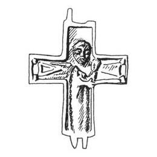

Catalog › CE-0237 · KOR2003-I.1.21
Valvă de revers de encolpion cu Maica Domnului cu Pruncul în relief înalt, foarte grosolană
sec. după model XI (1001–1100) · loc necunoscut · Muzeul de Istorie de Stat, Moscova (GIM), secția de metale și materiale sintetice (OMSM), inv. 75034, М 6120
single valve of a reliquary cross, aramă; c. după model XI (1001–1100); find spot unknown; kept at Muzeul de Istorie de Stat, Moscova (GIM), secția de metale și materiale sintetice (OMSM).


Identificare
- Categorie
- Valvă izolată
- Material
- Aramă
- Tehnică
- Turnare în relief
- Dimensiuni
- Î 60 × L 50 mm
Iconografie
- Revers
- Maica Domnului cu Pruncul
- Descriere revers
- Valvă de revers de encolpion cu capete drepte, cu balamaua dreaptă de sus ruptă. Imagine foarte grosolană, frontală, a Maicii Domnului cu Pruncul pe brațul stâng, executată în relief înalt, ocupă aproape tot planul vertical al valvei. Pe capetele laterale ale valvei, în relief jos (la nivelul bordurilor netede care încadrează valva), sunt reprezentate figuri subtriunghiulare care amintesc capetele crucilor de procesiune încheiate cu cercuri.
Datare și atribuire
- Datare
- sec. după model XI (1001–1100)
- Centru
- Necunoscut
- Tipologie
- Korzukhina–Peskova 2003, tip I 1
Descoperire
- Context
- Colecție (fără context)
Păstrare și referințe
- Colecție
- Muzeul de Istorie de Stat, Moscova (GIM), secția de metale și materiale sintetice (OMSM)
- Nr. inventar
- 75034, М 6120
- Bibliografie
- G. F. Korzukhina, A. A. Peskova, Древнерусские энколпионы. Нагрудные кресты-реликварии XI–XIII вв., Sankt-Petersburg, 2003 [Korzukhina–Peskova 2003], p. 48, cat. nr. I 1/21, reprodusă la Табл. 4 (planșe, p. 246). Bibliografie citată în sursă: Уваров 1908, 184, № 95, рис. 160; Пескова 2002, 254–262; Корзухина, архив ф. 77, д. 16, л. 116.
- Figura
- Табл. 4
- Planșe
- Korzukhina–Peskova 2003, Табл. 4 (planșă fără paginație proprie în PDF; p. 246 tipărită)
- Observații
- Datare după Peskova: sec. după model XI. Pe planșă, alături de valva din colecția Uvarov, este dat și desenul singurului encolpion întreg de acest tip, din colecția „siriană” Khanenko (NMIU № В-4626/241, 244), ale cărui două valve sunt înregistrate separat; autorul îl consideră un singur obiect. Datare „după model din sec. XI”. Coordonate: nu sunt date în sursă.
Citare: Corpus Encolpiorum, CE-0237, Valvă de revers de encolpion cu Maica Domnului cu Pruncul în relief înalt, foarte grosolană, https://vitaliejosanu1979-ux.github.io/primul-meu-proiect/piese/KOR2003-I.1.21/ (accesat 2026-10-17).